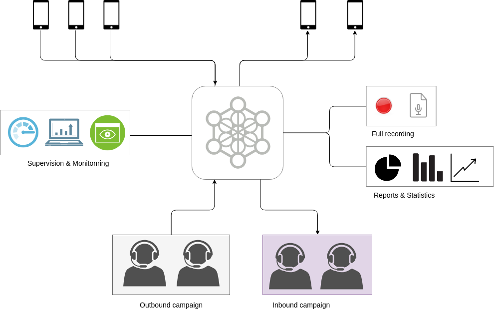

INTRODUCCION A OMNILEADS¶
OMniLeads es una solución para Contact Centers basada en Software Libre (GPL v3), destinada a soportar la gestión, operación y administración de un Contact Center.
OMniLeads como sistema ofrece funcionalidades que permiten desarrollar operaciones de Call Center tanto Inbound como Outbound (campañas preview, manuales y predictivas), que se puede instalar siguiendo unos pocos pasos. Con OMniLeads se puede montar toda una operación de Contact Center ya sea dentro del marco de una compañia u organización que necesita su propio Contact Center integrado al PBX operativo, así como también como Núcleo de Comunicaciones de una compañía que brinda servicios de Customer Contact (Business Outsorocing Process - BPO).
De gestión y operación 100% Web, los agentes disponen de una interfaz basada WebRTC(link) para la gestión de comunicaciones mientras que los supervisores utilizan WebRTC para realizar acciones de channel spy, coaching de agentes, gestión de QA o three way conferences. Por otro lado, los administradores cuentan con una interfaz que permite mantener usuarios, campañas, bases de datos, a su vez extraer métricas y estadísticas, gestionar las grabaciones de las comunicaciones entre otras funcionalidades.
Cómo lo obtengo ?¶
Nuestro repositorio se encuentra disponible en GitLab (link), para libre descarga y posterior uso del Software.
Donde se puede instalar ?¶
OMniLeads puede correr sobre las distribuciones de GNU/Linux; CentOS7, Debian-9 y Ubuntu Server 18.04.
Cómo lo instalo ?¶
Dentro del código del proyecto, se dispone de un script de instalación que permite instalar el producto sobre cualquier SO de los mencionados anteriormente. En la sección Instalación de ésta pagin se detalla el proceso, en sus diferentes tipos de instalación.
Características y funcionalidades de OMniLeads¶
INSTALACIÓN¶
En el siguiente video se expone paso a paso el proceso de instalación más básico (self-hosted script)
En las próximas páginas del presente capítulo, detallaremos la ejecución de cada tipo de instalación.
Tipos de instalación¶
Existen tres formas en la que OMniLeads puede ser instalador. En la presente sección se detalla cada proceso.
SETTING INICIALES¶
En esta sección se plantean las configuraciones escenciales a realizar una vez que dejamos instalada una instancia de OMniLeads.